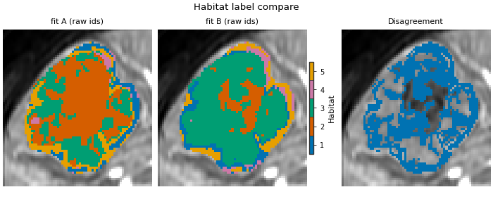
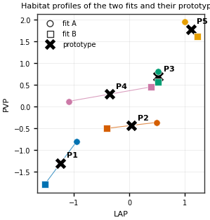
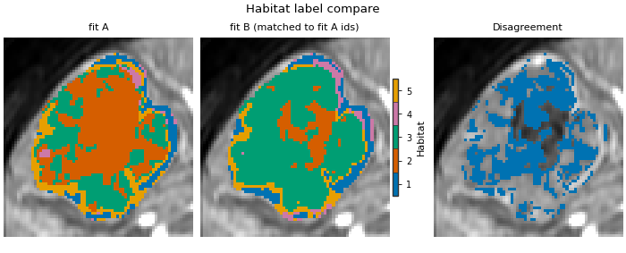

Note
Go to the end to download the full example code.
Matching habitat labels between two fits
Background. A clustering run numbers its habitats in arbitrary order. Fit the same analysis twice on different patients and the same kind of tissue can be habitat 1 in one fit and habitat 3 in the other (label switching). The two fits may even choose a different number of habitats. Anything that compares habitats by id – a Dice score, a “volume fraction of habitat 2” column, a pooled table from two sites or two time windows – is wrong until the ids are matched.
Purpose. You will fit the analysis of Two-step habitats with a Spec twice: fit A on subj001 + subj002 and fit B on subj003 + subj004. This is the 5-subject demo cohort split in two, not two centres. You will see that their raw ids disagree on an unseen patient (subj005), describe every habitat of both fits in one comparable feature space, match the fits with prototype matching, and check the result on subj005 with an independent method (voxel overlap). The page also shows why one reference subject is not a neutral anchor, how per-subject naming behaves on cohort fits, and what matching changes in a feature table.
When to use. When two habitat models were fitted separately (two halves of a cohort, two sites, a refit after new data) and their habitats must be compared or pooled. Maps labelled by ONE model (the training maps of a two-step or pooled-voxel fit, or new patients labelled with a saved model) already share one id space: do not rematch them.
Key terms. Full definitions are on Concepts.
label switching – the same habitat gets different ids in independent fits.
habitat profile – one summary row per habitat: here the mean of each subject-normalized DCE phase over the voxels the habitat covers.
prototype – a shared reference row. Every habitat of every fit is matched one-to-one onto a prototype (Hungarian assignment on squared Euclidean distance); prototypes move to the mean of their matched rows, and the two steps repeat until nothing changes. No fit or subject is chosen as the reference.
voxel overlap matching – when two maps label the SAME voxels, ids are paired by the largest number of shared voxels. It needs no features at all.
adjusted Rand index (ARI) – agreement of two partitions that ignores the id names (1 = same grouping, about 0 = chance).
Both fits use the approved analysis definition (subject-level winsorize
and min-max, 30 supervoxels, cohort-level 10-bin discretization,
k-means with the elbow rule on 2..10 habitats). One deviation: only the
volume feature stage is kept (MSI, ITH and graph features do not
change the labels and are skipped for speed). The only thing that
differs between the fits is which two patients they were trained on.
Method details, formulas, and literature:
Matching habitat labels across fits and subjects.
Load the cohort and split it in two
Fit A learns from the first two demo patients, fit B from the next two. subj005 is seen by neither fit; it is the patient on which the two definitions are compared at the end. sphinx_gallery_thumbnail_number = 3
from dataclasses import replace
from pathlib import Path
from typing import Dict, Sequence
import matplotlib.pyplot as plt
import numpy as np
import pandas as pd
from scipy.optimize import linear_sum_assignment
from scipy.spatial.distance import cdist
from habit.contracts import HabitatMap, Subject, VoxelFeatureField, cohort_from_directory
from habit.datasets import fetch_demo
from habit.feature_preprocessing import ZScoreScaling, SubjectPreprocessingChain, Winsorizing
from habit.kernels import adjusted_rand_index
from habit.kernels.habitat_label_match import match_rows_to_prototypes, remap_label_array
from habit.precision import align_habitat_map, align_habitat_maps_to_prototypes, habitat_stability
from habit.execution import backend_from_policy
from habit.recipes import Study
from habit.spec import HabitatSpec, Spec, Stage
from habit.spec.policy import RunPolicy
from habit.viz import plot_habitat_label_compare, plot_prototype_matching
from habit.voxel_features import RawVoxelFeatures
# Change DATA / MODALITIES / ROI to your preprocessed layout.
DATA = fetch_demo()
MODALITIES = ("pre_contrast", "LAP", "PVP", "delay_3min")
ROI = "LAP"
cohort = cohort_from_directory(DATA, modalities=MODALITIES, roi=ROI)
cohort_a, cohort_b, new_patient = cohort[:2], cohort[2:4], cohort[4:5]
print("fit A trains on:", list(cohort_a.subject_ids))
print("fit B trains on:", list(cohort_b.subject_ids))
print("unseen patient: ", list(new_patient.subject_ids))
Path("out").mkdir(exist_ok=True)
HABIT demo data (cached)
DATA (preprocessed root): C:\Users\dongm\.habit_data\demo-data-v1\preprocessed
On-disk inventory of this folder:
subjects (5): subj001, subj002, subj003, subj004, subj005
image series: LAP, PVP, delay_3min, pre_contrast
mask keys: LAP, PVP, delay_3min, pre_contrast
example image: images/subj001/delay_3min/WATER__BH_Ax_LAVA_Flex_3min_Series0012.nrrd
example mask: masks/subj001/delay_3min/WATER__BH_Ax_LAVA_Flex_10min_Series0017_mask.nrrd
Your own data must use the same folder tree (change IDs / series names):
DATA/
images/<subject_id>/<modality>/<one image file>
masks/<subject_id>/<roi>/<one mask file>
Then load it with the same call the demos use:
cohort = cohort_from_directory(DATA, modalities=("LAP",), roi="LAP")
Swap DATA / modalities / roi to match your tree. Mask key is often the
same as one image series (here LAP).
fit A trains on: ['subj001', 'subj002']
fit B trains on: ['subj003', 'subj004']
unseen patient: ['subj005']
Fit the same definition twice
One spec, two training sets. Each fit_predict learns its own
supervoxels, its own cohort-level bin edges, its own number of
habitats (elbow rule) and its own centroids. Nothing ties habitat 1
of fit A to habitat 1 of fit B.
spec = HabitatSpec(
name="label_matching_two_step",
stages=(
# extract: one intensity column per DCE phase, voxels inside the ROI.
Stage("extract", Spec("raw", {"modalities": list(MODALITIES), "roi": ROI})),
# subject-level: clip to each patient's own 1st..99th percentile ...
Stage("preprocess", Spec("winsorize", {"winsor_limits": [0.01, 0.01]})),
# ... then rescale each column to 0..1 with that patient's min / max.
Stage("preprocess2", Spec("zscore")),
# partition: 30 supervoxels per tumour.
Stage("partition", Spec("kmeans", {"n_supervoxels": 30})),
# pool: stack the training supervoxels of THIS fit only.
Stage("pool", Spec("pool")),
# cohort-level: 10 equal-width bins, edges learned on this fit's pool.
# fit: k-means, 2..10 habitats, elbow rule.
Stage(
"fit",
Spec(
"kmeans",
{"min_habitats": 2, "max_habitats": 10, "validation": "elbow", "n_init": 10},
),
),
Stage("assign", Spec("nearest_centroid")),
# quantify: only volume fractions (used in the table section below).
# MSI / ITH / graph are left out to keep the page fast; they are
# computed after assign and do not change any habitat label.
Stage("volume", Spec("volume")),
),
random_seed=0,
)
result_a = Study(spec).fit_predict(
cohort_a,
backend=backend_from_policy(
RunPolicy(backend="serial", on_subject_failure="continue")
),
)
result_b = Study(spec).fit_predict(
cohort_b,
backend=backend_from_policy(
RunPolicy(backend="serial", on_subject_failure="continue")
),
)
model_a, model_b = result_a.habitat_model, result_b.habitat_model
print(f"fit A: K = {model_a.n_habitats}, model_id {model_a.model_id}")
print(f"fit B: K = {model_b.n_habitats}, model_id {model_b.model_id}")
Cohort.map[_ComputeUnits]: 0%| | 0/2 [00:00<?, ?it/s]
Cohort.map[_ComputeUnits]: 50%|█████ | 1/2 [00:04<00:04, 4.22s/it]
Cohort.map[_ComputeUnits]: 100%|██████████| 2/2 [00:06<00:00, 3.00s/it]
Cohort.map[_ComputeUnits]: 100%|██████████| 2/2 [00:06<00:00, 3.00s/it]
Cohort.map[_AssignPrecomputedUnits]: 0%| | 0/2 [00:00<?, ?it/s]
Cohort.map[_AssignPrecomputedUnits]: 50%|█████ | 1/2 [00:00<00:00, 2.58it/s]
Cohort.map[_AssignPrecomputedUnits]: 100%|██████████| 2/2 [00:00<00:00, 2.57it/s]
Cohort.map[_AssignPrecomputedUnits]: 100%|██████████| 2/2 [00:00<00:00, 2.57it/s]
Cohort.map[_ComputeUnits]: 0%| | 0/2 [00:00<?, ?it/s]
Cohort.map[_ComputeUnits]: 50%|█████ | 1/2 [00:01<00:01, 1.55s/it]
Cohort.map[_ComputeUnits]: 100%|██████████| 2/2 [00:03<00:00, 1.52s/it]
Cohort.map[_ComputeUnits]: 100%|██████████| 2/2 [00:03<00:00, 1.52s/it]
Cohort.map[_AssignPrecomputedUnits]: 0%| | 0/2 [00:00<?, ?it/s]
Cohort.map[_AssignPrecomputedUnits]: 50%|█████ | 1/2 [00:00<00:00, 2.64it/s]
Cohort.map[_AssignPrecomputedUnits]: 100%|██████████| 2/2 [00:00<00:00, 2.67it/s]
Cohort.map[_AssignPrecomputedUnits]: 100%|██████████| 2/2 [00:00<00:00, 2.67it/s]
fit A: K = 5, model_id kmeans-3432f3b65bfec11a
fit B: K = 5, model_id kmeans-8b5c6e3e4454443b
Raw ids disagree on the same patient
Label subj005 with both saved definitions. The two maps cover exactly the same voxels, so any disagreement is visible voxel by voxel. The fraction of voxels with the same raw id is low, yet the ARI (which ignores names) is much higher: the two fits draw similar borders but call the regions by different numbers.
prediction_a = Study.from_model(model_a, spec=spec).predict(new_patient)
prediction_b = Study.from_model(model_b, spec=spec).predict(new_patient)
map_a, map_b = prediction_a.habitat_maps[0], prediction_b.habitat_maps[0]
labels_a = np.asarray(map_a.label_array)
labels_b = np.asarray(map_b.label_array)
roi = labels_a > 0
raw_agreement = float(np.mean(labels_a[roi] == labels_b[roi]))
ari = adjusted_rand_index(labels_a, labels_b)
print(f"subj005 voxels with the same raw id: {raw_agreement:.1%}")
print(f"subj005 adjusted Rand index (ignores names): {ari:.3f}")
# Rows: fit A id, columns: fit B id, cells: shared voxels.
print(pd.crosstab(labels_a[roi], labels_b[roi], rownames=["fit A"], colnames=["fit B"]))
subject = new_patient[0]
# align_labels=False draws both maps with their own raw ids.
fig = plot_habitat_label_compare(
subject.image("LAP"),
map_a,
map_b,
titles=("fit A (raw ids)", "fit B (raw ids)"),
align_labels=False,
crop_to="labels",
)
fig.savefig("out/label_matching_raw_ids.png", dpi=150, bbox_inches="tight")
plt.show()

Cohort.map[_LabelAndDescribe]: 0%| | 0/1 [00:00<?, ?it/s]
Cohort.map[_LabelAndDescribe]: 100%|██████████| 1/1 [00:07<00:00, 7.98s/it]
Cohort.map[_LabelAndDescribe]: 100%|██████████| 1/1 [00:07<00:00, 7.98s/it]
Cohort.map[_LabelAndDescribe]: 0%| | 0/1 [00:00<?, ?it/s]
Cohort.map[_LabelAndDescribe]: 100%|██████████| 1/1 [00:07<00:00, 7.92s/it]
Cohort.map[_LabelAndDescribe]: 100%|██████████| 1/1 [00:07<00:00, 7.92s/it]
subj005 voxels with the same raw id: 35.8%
subj005 adjusted Rand index (ignores names): 0.393
fit B 1 2 3 4 5
fit A
1 0 0 0 1499 9085
2 0 5846 22022 0 0
3 3022 0 16721 1866 0
4 0 0 2027 4492 0
5 10124 0 0 1785 1595
F:\work\habit_project\habit\viz\habitat_core.py:948: UserWarning: Display geometry conflict: image/anatomy direction does not match mask/label direction. Using the mask/label direction so coronal/sagittal superior-up follows the labelled anatomy. Pass direction= to override.
resolved_direction, resolved_spacing = resolve_display_geometry(
Why one reference is not a neutral anchor
The obvious fix is “match everything to one reference”. With two fits that is harmless, but with three or more subjects or fits the names depend on who the reference is. Toy data: three subjects, two habitats each, two features (enhancement, washout), already comparable across subjects.
Subject |
Habitat |
Enhancement |
Washout |
|---|---|---|---|
A |
1 |
1 |
0 |
A |
2 |
0 |
0 |
B |
1 |
0 |
1 |
B |
2 |
0 |
0 |
C |
1 |
2 |
1 |
C |
2 |
0 |
2 |
toy = {
"A": np.array([[1.0, 0.0], [0.0, 0.0]]),
"B": np.array([[0.0, 1.0], [0.0, 0.0]]),
"C": np.array([[2.0, 1.0], [0.0, 2.0]]),
}
def names_from_reference(rows_by_subject: Dict[str, np.ndarray], reference: str) -> Dict[str, np.ndarray]:
"""Name every subject's rows after its Hungarian partner in one reference subject.
Args:
rows_by_subject: Habitat summary rows per subject, shape ``(n_habitats, n_features)``.
reference: Key of the subject used as the reference.
Returns:
Dict[str, np.ndarray]: Per subject, the 0-based reference row each habitat is matched to.
"""
names = {}
for name, rows in rows_by_subject.items():
# Hungarian on plain Euclidean distance to the reference rows.
row_ind, col_ind = linear_sum_assignment(cdist(rows, rows_by_subject[reference]))
partner = np.empty(len(rows), dtype=int)
partner[row_ind] = col_ind
names[name] = partner
return names
def within_group_ss(rows_by_subject: Dict[str, np.ndarray], names: Dict[str, np.ndarray]) -> float:
"""Neutral score of a grouping: squared distance of every habitat to its group mean.
Args:
rows_by_subject: Habitat summary rows per subject.
names: Per subject, the group (0-based) each row belongs to.
Returns:
float: Within-group sum of squares; lower means tighter groups.
"""
total = 0.0
for group in range(2):
members = np.vstack([rows[names[s] == group] for s, rows in rows_by_subject.items()])
total += float(((members - members.mean(axis=0)) ** 2).sum())
return total
for reference in ("A", "B"):
names = names_from_reference(toy, reference)
print(f"reference {reference}: C habitat 1 -> group {names['C'][0] + 1}, "
f"within-group SS {within_group_ss(toy, names):.3f}")
# Prototype matching tries every subject as the start and keeps the
# tightest grouping, so the result does not depend on who starts.
toy_match = match_rows_to_prototypes(list(toy.values()))
toy_names = dict(zip(toy, toy_match.assignments))
print(f"prototype matching: within-group SS {within_group_ss(toy, toy_names):.3f}")
reference A: C habitat 1 -> group 1, within-group SS 5.333
reference B: C habitat 1 -> group 2, within-group SS 6.000
prototype matching: within-group SS 4.667
Describe both fits in one comparable space
Matching needs one summary row per habitat, and the rows of the two fits must mean the same thing. The fitted centroids do NOT qualify: they are in bin units, and each fit learned its own bin edges on its own pool, so “bin 5” of fit A is not “bin 5” of fit B.
The subject-normalized intensities (winsorize + z-score with each patient’s own statistics, the first two stages of the spec) are on the same 0..1 scale in every patient. So a habitat’s profile is the mean of those four columns over every voxel the habitat covers in its fit’s own training patients. The same chain is rebuilt here from the atomic components.
extractor = RawVoxelFeatures(modalities=list(MODALITIES), roi=ROI)
subject_chain = SubjectPreprocessingChain([Winsorizing(winsor_limits=(0.01, 0.01)), ZScoreScaling()])
def normalized_field(one_subject: Subject) -> VoxelFeatureField:
"""Subject-level normalized voxel intensities of one patient (same as the spec's first stages).
Args:
one_subject: A ``Subject`` from the cohort.
Returns:
VoxelFeatureField: One row per ROI voxel, one 0..1 column per DCE phase.
"""
field = extractor(one_subject)
return field.with_feature_frame(
subject_chain(field.feature_frame()),
produced_by="feature_preprocessing.subject.voxel",
spec_fingerprint=subject_chain.spec.fingerprint(),
)
def habitat_profiles(
maps: Sequence[HabitatMap], fields: Sequence[VoxelFeatureField], habitat_ids: Sequence[int]
) -> np.ndarray:
"""Mean normalized intensity per habitat, pooled over the given patients.
Args:
maps: Habitat maps of one fit, one per patient.
fields: Normalized voxel fields of the same patients, same order.
habitat_ids: Habitat ids of the fit, in row order of the result.
Returns:
np.ndarray: Shape ``(n_habitats, n_features)``; row ``i`` describes ``habitat_ids[i]``.
"""
row_labels, row_values = [], []
for habitat_map, field in zip(maps, fields):
# Habitat id of every field row, read at the row's (z, y, x) position.
row_labels.append(np.asarray(habitat_map.label_array)[tuple(field.voxel_index.T)])
row_values.append(np.asarray(field.values, dtype=float))
labels = np.concatenate(row_labels)
values = np.vstack(row_values)
return np.vstack([values[labels == hid].mean(axis=0) for hid in habitat_ids])
fields_a = [normalized_field(s) for s in cohort_a]
fields_b = [normalized_field(s) for s in cohort_b]
ids_a = list(result_a.habitat_maps[0].habitat_ids)
ids_b = list(result_b.habitat_maps[0].habitat_ids)
profile_a = habitat_profiles(result_a.habitat_maps, fields_a, ids_a)
profile_b = habitat_profiles(result_b.habitat_maps, fields_b, ids_b)
print("fit A profiles (rows = habitats, columns =", MODALITIES, ")")
print(profile_a.round(3))
print("fit B profiles")
print(profile_b.round(3))
fit A profiles (rows = habitats, columns = ('pre_contrast', 'LAP', 'PVP', 'delay_3min') )
[[ 1.421 0.997 1.95 2.042]
[-0.845 -0.954 -0.807 -0.765]
[-0.227 0.49 -0.363 -0.402]
[ 0.938 -1.095 0.122 0.191]
[ 0.55 0.511 0.813 0.75 ]]
fit B profiles
[[ 0.04 0.519 0.573 0.484]
[-0.857 -1.524 -1.784 -1.449]
[-0.533 -0.412 -0.5 -0.509]
[ 1.576 0.389 0.453 0.254]
[ 1.439 1.219 1.608 1.799]]
Match the two fits
match_rows_to_prototypes takes one block of rows per fit and runs
the prototype loop. With two blocks it equals pairwise Hungarian
matching on squared distance. The number of prototypes is the larger
K, so when the fits disagree on K the extra habitat keeps a
prototype of its own and has no partner in the other fit: nothing is
merged or dropped. distance is the Euclidean distance of each
habitat to its prototype, in normalized-intensity units (0..1 scale);
the partner distance is the distance between the two matched
profiles.
match = match_rows_to_prototypes([profile_a, profile_b])
proto_of_a = {hid: int(p) for hid, p in zip(ids_a, match.assignments[0])}
proto_of_b = {hid: int(p) for hid, p in zip(ids_b, match.assignments[1])}
a_of_proto = {p: hid for hid, p in proto_of_a.items()}
rows = []
for hid_b in ids_b:
hid_a = a_of_proto.get(proto_of_b[hid_b])
partner_distance = (
float(np.linalg.norm(profile_b[ids_b.index(hid_b)] - profile_a[ids_a.index(hid_a)]))
if hid_a is not None
else np.nan
)
rows.append({"fit B habitat": hid_b, "fit A partner": hid_a, "profile distance": round(partner_distance, 3)})
correspondence = pd.DataFrame(rows)
print(correspondence.to_string(index=False))
print(f"converged: {match.converged} after {match.n_iter} rounds, objective {match.objective:.4f}")
# Mapping used from here on: fit B id -> fit A id. A fit-B habitat with
# no partner gets a new id above fit A's ids, so it never merges.
next_free = max(ids_a) + 1
b_to_a: Dict[int, int] = {}
for hid_b in ids_b:
hid_a = a_of_proto.get(proto_of_b[hid_b])
if hid_a is None:
hid_a, next_free = next_free, next_free + 1
b_to_a[hid_b] = int(hid_a)
print("fit B -> fit A ids:", b_to_a)
# Arterial (LAP) vs portal-venous (PVP) columns of the profiles. Lines
# join each habitat to its prototype (cross).
fig = plot_prototype_matching(
[profile_a, profile_b],
match,
block_names=["fit A", "fit B"],
feature_names=MODALITIES,
feature_axes=(1, 2),
title="Habitat profiles of the two fits and their prototypes",
)
fig.savefig("out/label_matching_prototypes.png", dpi=150, bbox_inches="tight")
plt.show()

fit B habitat fit A partner profile distance
1 5 0.623
2 2 1.322
3 3 0.968
4 4 1.650
5 1 0.476
converged: True after 2 rounds, objective 3.0127
fit B -> fit A ids: {1: 5, 2: 2, 3: 3, 4: 4, 5: 1}
Check on the unseen patient
Rename fit B’s map of subj005 into fit A’s ids and count agreeing
voxels again. The ARI must not change: renaming never moves a border.
Then an independent check: voxel overlap matching
(align_habitat_map()) pairs the ids from the
shared voxels of subj005 alone, without any profile. Pairs on which
both methods agree do not depend on the matching method; pairs on
which they differ deserve a closer look.
renamed_b = remap_label_array(labels_b, b_to_a)
map_b_renamed = replace(map_b, label_array=renamed_b, habitat_ids=tuple(sorted(set(b_to_a.values()))))
matched_agreement = float(np.mean(labels_a[roi] == renamed_b[roi]))
print(f"same id before matching: {raw_agreement:.1%}; after matching: {matched_agreement:.1%}")
print(f"ARI unchanged by renaming: {np.isclose(adjusted_rand_index(labels_a, renamed_b), ari)}")
# The two models have different model_ids, so align_habitat_map aligns.
# Its output uses fit A's ids; a fit-B habitat without a partner gets
# the next free id (here above fit A's K), exactly like b_to_a above.
overlap_aligned = align_habitat_map(map_a, map_b)
overlap_pairs = {
int(b): int(a)
for b, a in zip(labels_b[roi], np.asarray(overlap_aligned.label_array)[roi])
}
comparison = pd.DataFrame(
{
"fit B habitat": ids_b,
"profile matching": [b_to_a[h] for h in ids_b],
"overlap matching": [overlap_pairs.get(h) for h in ids_b],
}
)
comparison["same"] = comparison["profile matching"] == comparison["overlap matching"]
print(f"fit A ids > {max(ids_a)} mean 'no partner in fit A'")
print(comparison.to_string(index=False))
print(f"pairs on which both methods agree: {int(comparison['same'].sum())} of {len(ids_b)}")
# Dice of every matched pair on subj005 (overlap pairing, fit A ids).
print(habitat_stability(map_a, [map_b])[["habitat_id", "matched_id", "dice"]].round(3).to_string(index=False))
fig = plot_habitat_label_compare(
subject.image("LAP"),
map_a,
map_b_renamed,
titles=("fit A", "fit B (matched to fit A ids)"),
align_labels=False,
crop_to="labels",
)
fig.savefig("out/label_matching_matched_ids.png", dpi=150, bbox_inches="tight")
plt.show()

same id before matching: 35.8%; after matching: 57.8%
ARI unchanged by renaming: True
fit A ids > 5 mean 'no partner in fit A'
fit B habitat profile matching overlap matching same
1 5 5 True
2 2 2 True
3 3 3 True
4 4 4 True
5 1 1 True
pairs on which both methods agree: 5 of 5
habitat_id matched_id dice
1 5 0.854
2 2 0.347
3 3 0.536
4 4 0.556
5 1 0.760
F:\work\habit_project\habit\viz\habitat_core.py:948: UserWarning: Display geometry conflict: image/anatomy direction does not match mask/label direction. Using the mask/label direction so coronal/sagittal superior-up follows the labelled anatomy. Pass direction= to override.
resolved_direction, resolved_spacing = resolve_display_geometry(
What matching changes in a feature table
A cohort table has one column per habitat id. Before matching,
habitat_1_volume_fraction of fit A and of fit B are different
tissues. After renaming fit B’s columns with the mapping, each column
compares like with like (subj005, both fits).
fractions_a = prediction_a.features.frame.set_index("subject").filter(like="_volume_fraction")
fractions_b = prediction_b.features.frame.set_index("subject").filter(like="_volume_fraction")
renamed_columns = {
f"habitat_{hid_b}_volume_fraction": f"habitat_{hid_a}_volume_fraction" for hid_b, hid_a in b_to_a.items()
}
table = pd.concat(
{
"fit A": fractions_a.iloc[0],
"fit B raw ids": fractions_b.iloc[0],
"fit B matched ids": fractions_b.rename(columns=renamed_columns).iloc[0],
},
axis=1,
)
print(table.sort_index().round(3).to_string())
fit A fit B raw ids fit B matched ids
habitat_1_volume_fraction 0.132 0.164 0.133
habitat_2_volume_fraction 0.348 0.073 0.073
habitat_3_volume_fraction 0.270 0.509 0.509
habitat_4_volume_fraction 0.081 0.120 0.120
habitat_5_volume_fraction 0.169 0.133 0.164
Per-subject naming is for one-step designs
align_habitat_maps_to_prototypes() names each
SUBJECT’s map onto shared prototypes. That is the right tool when
every subject was clustered on its own (the per-subject design of
Habitats inside each subject). On
cohort fits it matches each training patient separately, so one
habitat of a fit can receive different names in two of its patients.
Check whether each fit’s habitats got one name per habitat:
per_subject = align_habitat_maps_to_prototypes(
list(result_a.habitat_maps) + list(result_b.habitat_maps),
features=fields_a + fields_b,
)
names = per_subject.assignments
for label, subject_ids in (("fit A", cohort_a.subject_ids), ("fit B", cohort_b.subject_ids)):
part = names[names.subject_id.isin(list(subject_ids))]
consistent = bool((part.groupby("habitat_id")["prototype_id"].nunique() == 1).all())
print(f"{label}: every habitat got one name in both of its patients -> {consistent}")
# Frozen prototypes name a NEW map without refitting them: pass the
# earlier result as prototypes=. Metric, features and scaling must be
# the ones used when the prototypes were fitted, otherwise HABIT refuses.
frozen = align_habitat_maps_to_prototypes(
[map_a, map_b], features=[normalized_field(subject)] * 2, prototypes=per_subject
)
# Rows come in input order: first fit A's map of subj005, then fit B's.
frozen_table = frozen.assignments.round(3)
n_rows_a = len(np.unique(labels_a[roi]))
frozen_table.insert(0, "map", ["fit A"] * n_rows_a + ["fit B"] * (len(frozen_table) - n_rows_a))
print(frozen_table.to_string(index=False))
fit A: every habitat got one name in both of its patients -> True
fit B: every habitat got one name in both of its patients -> True
map subject_id habitat_id prototype_id distance
fit A subj005 1 5 0.374
fit A subj005 2 1 0.665
fit A subj005 3 2 0.319
fit A subj005 4 4 0.663
fit A subj005 5 3 0.419
fit B subj005 1 3 0.521
fit B subj005 2 1 0.621
fit B subj005 3 2 0.473
fit B subj005 4 4 0.596
fit B subj005 5 5 0.583
How to read the result
Measured on this run (demo cohort split in two):
The elbow rule chose K = 4 for fit A (subj001 + subj002) and K = 5 for fit B (subj003 + subj004). Two halves of a small cohort need not agree on K.
On subj005 only 2.5 % of voxels carried the same raw id in both fits, while the ARI was 0.634: similar borders, different names.
In the toy table, reference A gives a within-group SS of 5.333 and reference B 6.000 (and puts subject C’s habitats into the opposite groups); prototype matching finds 4.667 without choosing a reference.
Profile matching paired four fit-B habitats with the four fit-A habitats (profile distances 0.095 to 0.381 on the 0..1 scale); fit-B habitat 3 has no partner and gets the new id 5. After renaming, 72.3 % of subj005 voxels carry the same id, and the ARI is unchanged (True): only names changed.
Voxel overlap matching on subj005 agrees on 3 of the 5 fit-B habitats. The two it disagrees on, fit-B habitats 3 and 5, are the two halves into which fit B splits fit-A habitat 2 (10002 and 9561 of its subj005 voxels in the table above). Profile matching gives fit-A habitat 2 to fit-B habitat 5 (closest mean profile); overlap gives it to fit-B habitat 3 (slightly more shared voxels). When two fits choose different K, which child inherits the parent’s name is a close call; report it instead of hiding it.
The Dice of the overlap pairs on subj005 ranged from 0.394 (fit-A habitat 4, 2.4 % of the tumour) to 0.912. A low Dice after matching means the two fits draw that habitat differently; matching fixes the names, it cannot make two definitions agree.
In the table, fit A and fit B with raw ids disagree column by column; with matched ids the three well-matched habitats have similar fractions (0.199 vs 0.252, 0.483 vs 0.405, 0.024 vs 0.099), and the split habitat 2 differs (0.294 vs 0.119, with 0.125 in the new column 5).
Per-subject naming kept fit B consistent but gave one fit-A habitat two different names in subj001 and subj002 (False above), which is why two cohort fits are matched at the level of the fit. The frozen naming of subj005 (by its own profiles) pairs fit-A habitat 2 with fit-B habitat 3, like overlap matching.
The disagreement is expected: each fit saw only two patients. With two halves of a real cohort, report K of each fit, the matched pairs with their profile distances, and the per-pair Dice.
Where to go next
Method, formulas, distances (
metric=),max_distanceand literature: Matching habitat labels across fits and subjects.The per-subject design whose maps need per-subject naming: Habitats inside each subject.
Stability of habitats under segmentation changes (voxel overlap and Dice): Precise features and habitat stability.
Train, save and label new patients with one model (no matching needed): Train, save, and predict new patients.
Total running time of the script: (0 minutes 36.425 seconds)